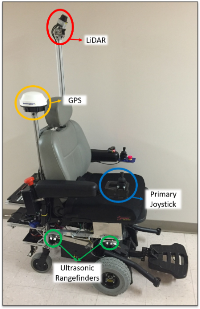
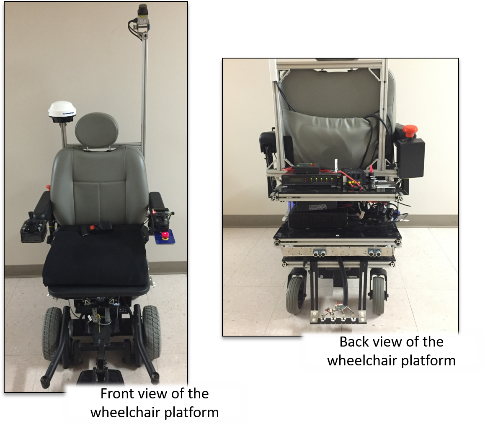

Hardware and Firmware for a Semi-Autonomous Wheelchair
 When I joined the Intelligent Vehicles and Systems group at Penn State as a sophomore, Dr. Sean Brennan asked me to retrofit an electric wheelchair for his newly formed graduate research team to automate. The team's goal was to improve the freedom-of-mobility for differently abled persons, namely those with ALS. With some assistance from the graduate student team, I disassembled the wheelchair except for the motors, the frame, and the batteries. First, we installed a shelving unit to carry all of the platform's electronics and computing hardware. Then, I installed a new power system, wheel encoders, a LIDAR, a Roboteq motor controller, range finders, an upgraded joystick, and an off-the-shelf computing platform. We installed ROS, the Robotic Operating System, on the computer, inside Ubuntu 14.04 to run all of the system's perception, navigation, and research algorithms. After multiple iterations with different parts, we eventually settled on the components seen to the left.
 After completing the hardware assembly, I assisted in writing ROS drivers for the hardware in C++ and Python. Specifically, I wrote drivers for the joystick, encoders, power sensors, and range finders. I maintained and updated existing in-house code for the motor controller. As research requirements changed, I supported all hardware and firmware change requests. Furthermore, I supported all new hardware requests, and assisted in the design of tests for early wheelchair research projects.
Further Information
I worked on this project while I was an undergraduate researcher at Penn State University working in Dr. Sean Brennan's Intelligent Vehicles and Systems Group. This work resulted in part of my undergraduate thesis, a Penn State undergraduate research symposium poster, and two co-authorships on a conference paper and a journal article. The wheelchair schematics can also be found here.
Skills and Tools Used
- Circuit Design and Assembly
- Sensor Basics (LIDAR, encoders, etc)
- Systems Design
- Safety Critical System Design
- Python, C++, ROS
Awards and Press
- Penn State EECS Press Release
- Penn State Nationwide Recruiting Materials
- Penn State College of Engineering CERI Grant